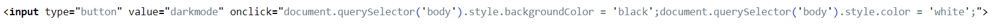

-JavaScript에 대해 알아보기-
이번엔 쫌 힘들지도 몰라요
Javascrip의 기본적인 역할은 html파일이 우리와 역동적으로 상호작용할 수 있도록 만드는것을 의미합니다.
JavaScript 같은 경우에는 앞선 html과 CSS에 비해 배워야 하는 양이 많기때문에 하나의 목표를 정하고 이에 맞추 배워보도록 합시다.
아래의 버튼이 보이시나요? 지금부터 이걸 만들겁니다
버튼을 만들기 위해서는 input 태그에 대해 알아야 합니다.
input태그는 안의 type의 내용을 바꿈으로써 다양한 형태로 변하는 태그입니다. 여기서 우리가 쓸 type은 button 입니다.
이때 value를 이용해 버튼명을 정할 수 있습니다.
한버튼은 다크모드, 한버튼은 라이트모드로 만들것이기에 버튼은 2개 만들어야 합니다
1단계는 이걸로 끝입니다. 다음으로 넘어가죠!
onclick 속성을 이벤트라고 부릅니다.
onclick 속성은 마우스가 클릭했을때 속성갑을 실행시키는 속성으로 반드시 속성값으로 JavaScript를 가지는 속성입니다 그렇다면 어떤 내용들이 들어가는지 알아보죠
대표적인 예로 경고창을 띄우는게 있습니다 코드로 본다면 이렇게 됩니다
그리고 저 코드에 해당되는 결과물이 아래의 버튼이죠
이제 슬슬 내용이 복잡해 지기 시작합니다.
우리는 다크모드를 만들기 위해서 웹페이지 전체를 감싸는 body 태그를 가져와야합니다.
이해하기 쉽게 먼져 완성된 문장을 가지고 설명해보죠
일단 버튼을 클릭했을때 제어할 태그를 가져오고 그 태그에 스타일을 적용해야 하므로 onclick의 속성값자리에 작성합니다
조금 부자연스럽지만 셋을 합쳐 해석해본다면 "버튼을 클릭했을때 이 파일내에서 body태그를 가져온다" 라고 생각하시면 될것같습니다
다크모드의 특징은 뭘까요? 검정색의 바탕과 하얀색의 글귀 아니겠습니까? 이제부터 이런 스타일들을 적용 해보도록 하죠
이번에도 먼져 코드를 보고 해석해봅시다. 영어만 할 줄 안다면 해석가능할 정도이니 어렵지 않을껍니다
backgroundColor는 배경색을 color는 문자의 색을 의미합니다.
CSS때와 마찮가지로 ;을 찍은 직후 추가 내용을 바로 적용할 수 있습니다.
다크모드의 코드는 제가 제공했으니 라이트모드는 여러분이 만들어보세요!